Vootichote Chammunkong
ICT Student - Web & UX/UI Enthusiast
Mahidol University
ICT Student - Web & UX/UI Enthusiast
Mahidol University
I am currently studying Information and Communication Technology with a focus on web development and UI/UX design. I have hands-on experience building web applications and designing user interfaces using tools like Figma and modern web technologies. I am seeking an internship opportunity in the IT field, particularly in web development or UI/UX design, where I can apply my skills and continue to grow as a developer.
Designed a mobile application UI focused on health tracking, nutrition, and user engagement. Created user flows including login, dashboard, QR scanning, and activity tracking using Figma.
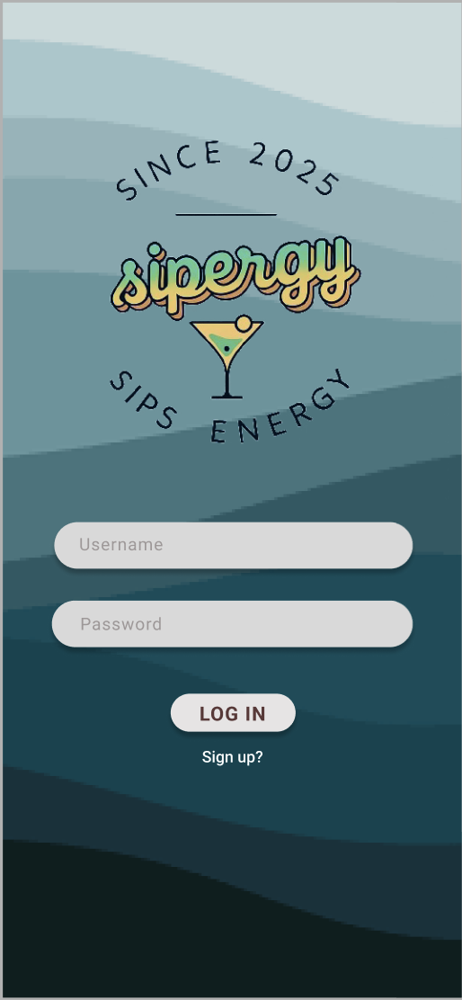
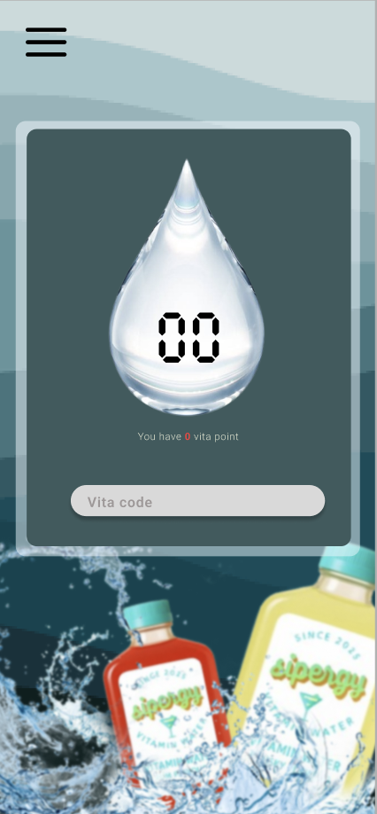
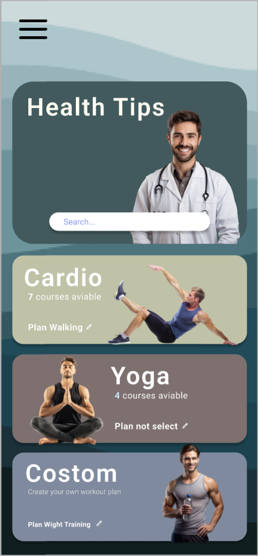
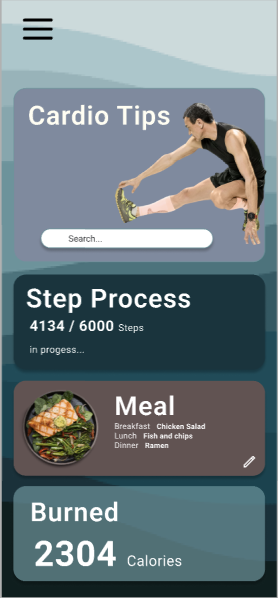
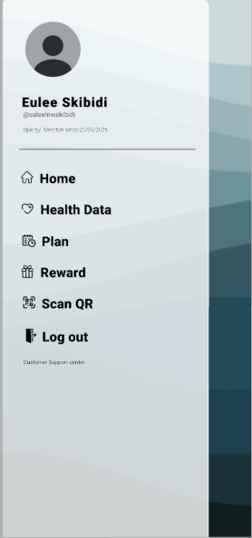
Designed a food promotion web interface focusing on layout, color usage, and visual hierarchy. Created using Figma as a UI design practice project.
 🔗 View Figma Design
🔗 View Figma Design
Designed an interactive web application UI that helps users identify their personal color palette based on skin tone, hair, and eye color. Applied visual design principles such as contrast, alignment, hierarchy, and color harmony to improve usability and user experience.
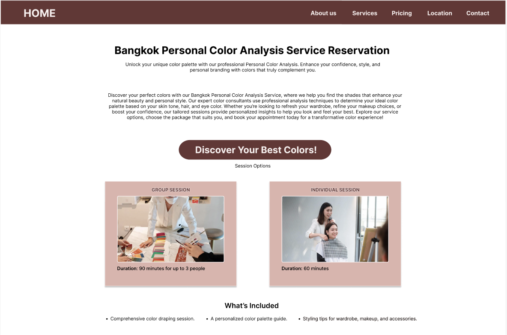
Developed a functional web application that allows users to search and explore restaurants.
💻 View GitHub Repository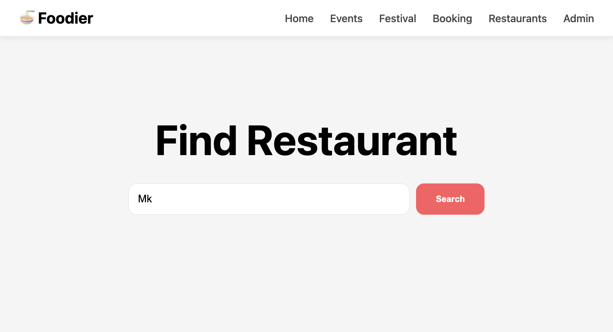
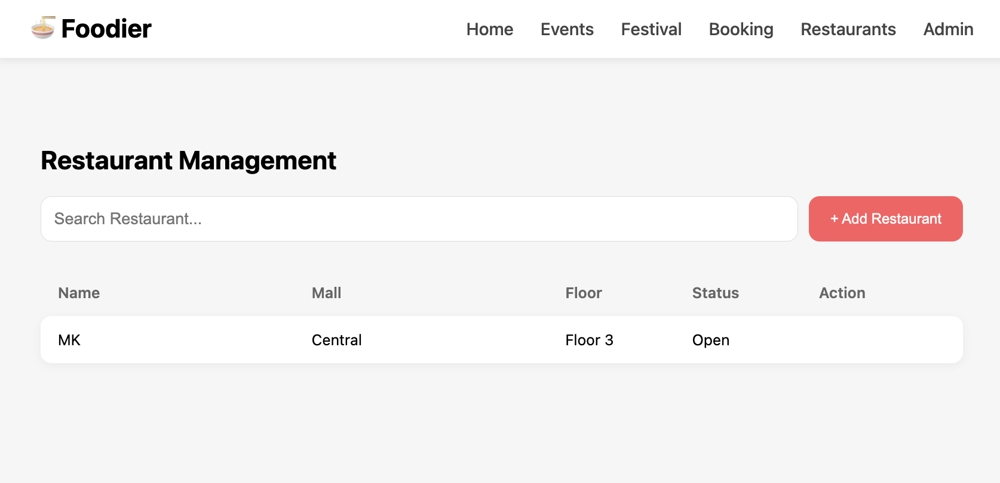
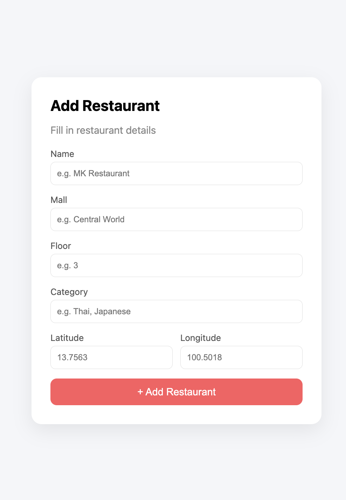
Worked as a Teacher Assistant for an English preparation course. Assisted students with lessons, exercises, and classroom activities, and supported instructors in teaching and coordination.
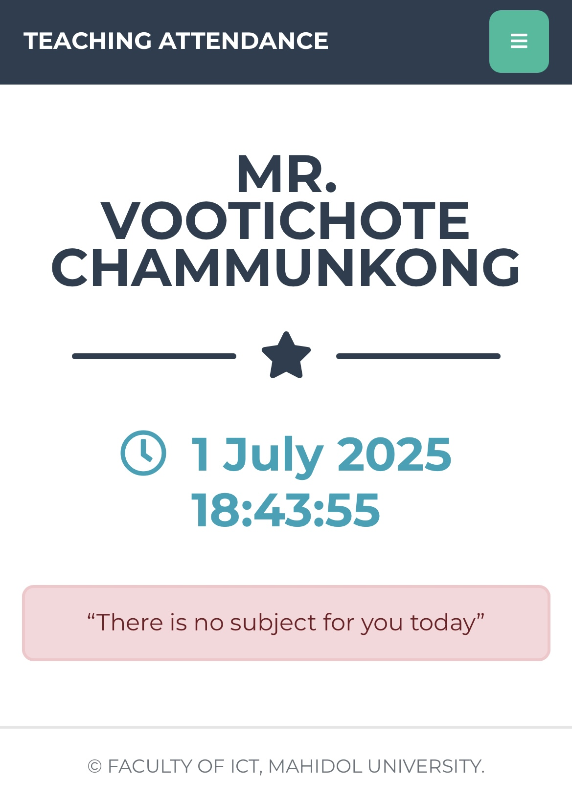
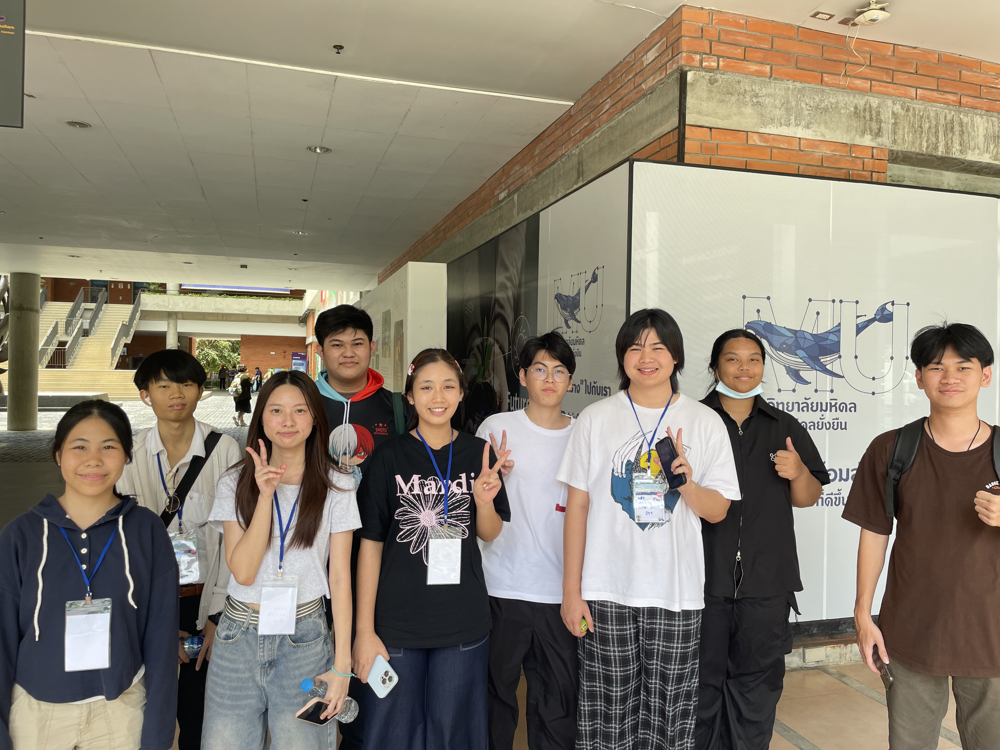
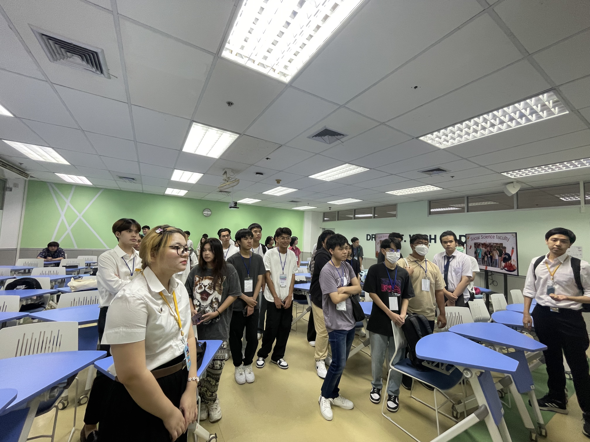